你好，我是靖詒
一位有五年經驗的設計師，專長於視覺設計與 3D 渲染。喜歡探索各種不同的設計風格與效果，並相信好的設計能融入生活，在日常的每個角落都被看見與實踐。
My Skills
視覺/插圖設計
將想法轉化為鮮明的圖像語言，無論是品牌宣傳或排版應用，都能用插圖與視覺設計打造獨特的氛圍與辨識度。
產品3D渲染
以 3D 渲染技術模擬實際的材質與光影，真實呈現產品的外觀與細節，讓概念在正式打樣前就能清楚展現。
產品3D渲染影片
透過動態表現與視覺敘事，將產品的功能與質感以影片形式完整展現，帶來更生動的觀賞體驗。
型錄製作
結合結構化的資訊編排與美觀的視覺設計，讓產品型錄兼具閱讀性與設計感，清楚傳遞重點內容。
